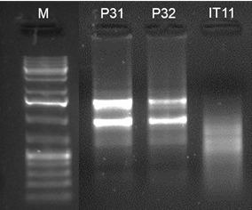
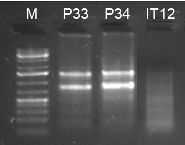
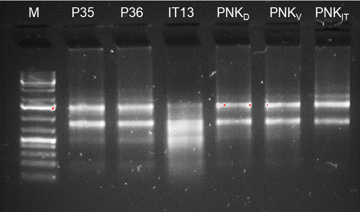
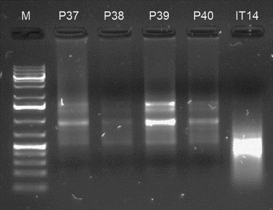
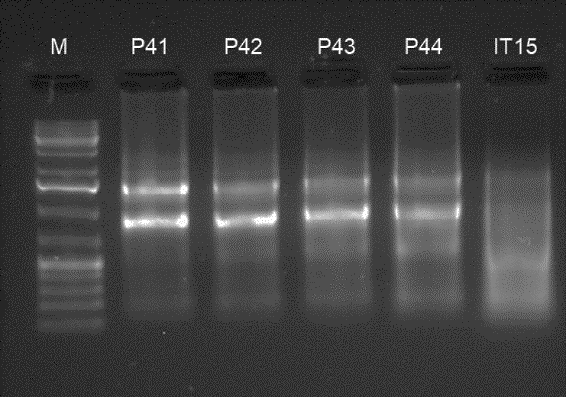
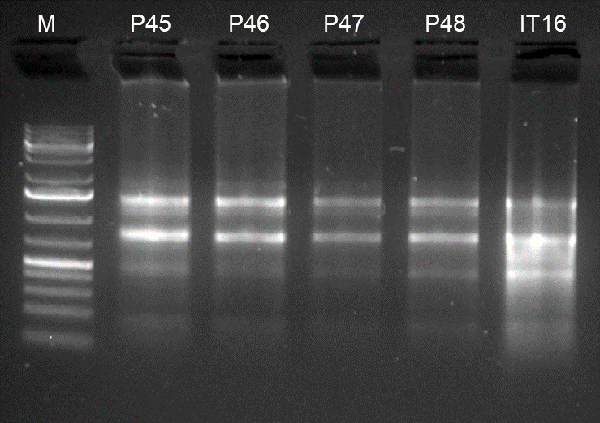
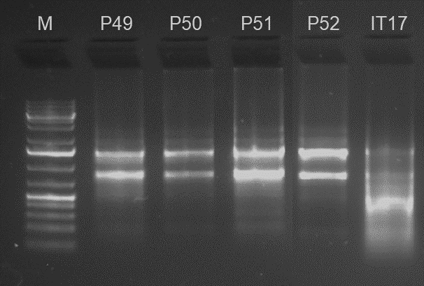
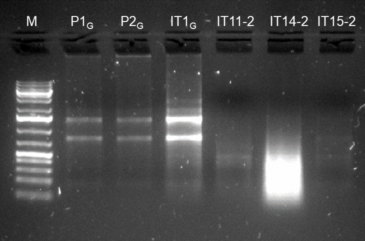
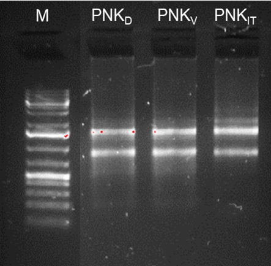

3 Diseño experimental
El diseño parte de individuos de rodaballo con fenotipo normal y malpigmentado, seleccionados en los tanques E6 y E8, donde las diferencias de pigmentación eran evidentes. En el tanque E6 se incluyeron descendientes de dos parejas parentales; en el tanque E8 se trabajó con una familia de medios hermanos, con una madre compartida y dos padres distintos. Esta estructura permite interpretar los resultados teniendo en cuenta tanto el fenotipo de pigmentación como el posible componente familiar.
3.1 Toma de muestras
Se tomaron fragmentos de piel de aproximadamente 20 mg con material de disección estéril (Figura 3.1). Los fragmentos se rasparon cuidadosamente con la cuchilla del bisturí para eliminar la parte de músculo y evitar posibles interferencias de este tejido en el posterior análisis de RNA-seq.
Se tomaron muestras de peces con fenotipo pigmentario normal (control) y peces pseudoalbinos o malpigmentados. En los rodaballos control se recogieron dos tipos de muestras de piel: pigmentada, de color oscuro, en el lado ocular; y no pigmentada, de color claro, en el lado ciego. En los rodaballos pseudoalbinos se recogieron cuatro tipos de muestras:
- Lado ocular
- Pigmentada, correspondiente a pigmentación normal.
- No pigmentada, correspondiente a pigmentación anormal.
- Lado ciego
- Pigmentada, correspondiente a pigmentación anormal.
- No pigmentada, correspondiente a pigmentación anormal.
{kind=link}
La unidad biológica principal de esta fase es la piel, muestreada en regiones pigmentadas y no pigmentadas. La Tabla 3.1 resume la lógica experimental de las muestras procesadas en el flujo nf-core/rnaseq documentado en este libro.
| Grupo | Fenotipo del individuo | Región muestreada | Interpretación esperada |
|---|---|---|---|
| Piel ocular pigmentada normal | Normal | Cara ocular, piel oscura | Referencia de pigmentación esperada en rodaballo. |
| Piel ciega clara normal | Normal | Cara ciega, piel clara | Referencia de ausencia fisiológica de pigmentación. |
| Piel oscura en malpigmentados | Malpigmentado | Cara ocular o ciega, piel pigmentada | Permite estudiar pigmentación mantenida o ectópica. |
| Piel clara en malpigmentados | Malpigmentado | Cara ocular o ciega, piel no pigmentada | Permite estudiar pérdida local o ausencia anómala de pigmentación. |
| Muestras complementarias | Normal, ambicolor o intestinal | Piel adicional o intestino | Material de apoyo para control, exploración o análisis integrativos posteriores. |
3.2 Muestras documentadas en este libro
La Tabla 3.2 recoge las muestras incluidas en la documentación bioinformática actual. La nomenclatura distingue muestras de piel (P) y muestras intestinales (IT). En capítulos posteriores, el control de calidad y el alineamiento se revisan a partir de los resultados generados por nf-core/rnaseq y MultiQC para este conjunto de bibliotecas.
| Muestra | Tejido | Tanque | Individuo | Fenotipo | Cara | Pigmentación |
|---|---|---|---|---|---|---|
| P31 | Piel | E6 | 46 | Normal | Ocular | Oscura |
| P32 | Piel | E6 | 46 | Normal | Ciega | Clara |
| P33 | Piel | E8 | 52 | Normal | Ocular | Oscura |
| P34 | Piel | E8 | 52 | Normal | Ciega | Clara |
| P35 | Piel | E8 | 70 | Normal | Ocular | Oscura |
| P36 | Piel | E8 | 70 | Normal | Ciega | Clara |
| P41 | Piel | E8 | 142 | Malpigmentado | Ocular | Oscura |
| P42 | Piel | E8 | 142 | Malpigmentado | Ocular | Clara |
| P43 | Piel | E8 | 142 | Malpigmentado | Ciega | Oscura |
| P44 | Piel | E8 | 131 | Malpigmentado | Ciega | Clara |
| P45 | Piel | E6 | 130 | Malpigmentado | Ocular | Oscura |
| P46 | Piel | E6 | 130 | Malpigmentado | Ocular | Clara |
| P47 | Piel | E6 | 130 | Malpigmentado | Ciega | Oscura |
| P48 | Piel | E6 | 130 | Malpigmentado | Ciega | Clara |
| P49 | Piel | E6 | 26 | Malpigmentado | Ocular | Oscura |
| P50 | Piel | E6 | 26 | Malpigmentado | Ocular | Clara |
| P51 | Piel | E6 | 26 | Malpigmentado | Ciega | Oscura |
| P52 | Piel | E6 | 26 | Malpigmentado | Ciega | Clara |
| P1G | Piel | ND | 56 | Normal | ND | ND |
| P2G | Piel | ND | 34 | Normal | ND | ND |
| PNKD | Piel | ND | ND | Ambicolor | ND | ND |
| PNKV | Piel | ND | ND | Ambicolor | ND | ND |
| IT12 | Intestino | ND | ND | ND | ND | ND |
| IT16 | Intestino | ND | ND | ND | ND | ND |
| IT1G | Intestino | ND | ND | ND | ND | ND |
| ITPNK | Intestino | ND | ND | ND | ND | ND |
3.3 Extracción de ARN y control de calidad
El ARN total se aisló a partir de las muestras de piel y de las muestras intestinales complementarias siguiendo un protocolo basado en extracción con TRIzolTM y columnas PhasemakerTM Tubes (Thermo Fisher), seguido de purificación en columna. La concentración, la cantidad total disponible y la integridad del ARN se evaluaron antes de la preparación de bibliotecas RNA-seq.
3.3.1 Control preliminar de extracción: NanoDrop y gel de agarosa
Antes del envío de muestras para preparación de bibliotecas, se realizó un control preliminar de las extracciones mediante NanoDrop y visualización de integridad en gel de agarosa al 1.5%. Este paso permitió revisar la concentración de ARN total, la pureza estimada por las ratios A260/A280 y A260/A230, y la presencia de bandas compatibles con ARN ribosomal íntegro.
La Tabla 3.3 corresponde al control de extracción inicial y contiene muestras candidatas, incluidas algunas que no llegaron a formar parte del conjunto final de bibliotecas RNA-seq. La selección final para secuenciación se basó en el control posterior de Novogene/Bioanalyzer, resumido en la Tabla 3.4.
Resumen_extracciones.docx y se muestran en la primera fila de cada bloque de muestras evaluado conjuntamente.
| Nº tubo | Conc. NanoDrop (ng/µl) | A260/A280 | A260/A230 | Integridad en gel de agarosa 1.5%, 100 mV, 30 min |
|---|---|---|---|---|
| P31 | 1142.7 | 2.14 | 2.10 |  |
| P32 | 813.4 | 2.14 | 2.18 | |
| IT11 | 534.3 | 2.13 | 2.00 | |
| P33 | 338.9 | 2.12 | 2.24 |  |
| P34 | 440.5 | 2.10 | 2.27 | |
| IT12 | 974.0 | 2.13 | 2.36 | |
| P35 | 299.3 | 2.12 | 1.08 |  |
| P36 | 308.8 | 2.13 | 2.18 | |
| IT13 | 367.6 | 2.13 | 1.99 | |
| P37 | 191.5 | 2.10 | 2.20 |  |
| P38 | 209.5 | 2.14 | 2.05 | |
| P39 | 827.3 | 2.15 | 2.31 | |
| P40 | 359.5 | 2.14 | 2.17 | |
| IT14 | 822.9 | 2.14 | 2.31 | |
| P41 | 583.6 | 2.10 | 2.29 |  |
| P42 | 506.5 | 2.10 | 2.15 | |
| P43 | 588.0 | 2.10 | 2.33 | |
| P44 | 1028.3 | 2.13 | 2.14 | |
| IT15 | 727.2 | 2.10 | 2.29 | |
| P45 | 529.7 | 2.05 | 2.33 |  |
| P46 | 383.0 | 2.09 | 2.11 | |
| P47 | 218.3 | 2.07 | 2.14 | |
| P48 | 291.2 | 2.09 | 1.77 | |
| IT16 | 963.5 | 2.07 | 2.31 | |
| P49 | 444.2 | 2.09 | 2.21 |  |
| P50 | 236.5 | 2.11 | 2.13 | |
| P51 | 927.5 | 2.11 | 2.26 | |
| P52 | 385.8 | 2.14 | 1.08 | |
| IT17 | 1327.1 | 2.10 | 2.24 | |
| P1G | 117.6 | 2.13 | 1.73 |  |
| P2G | 121.6 | 2.12 | 2.07 | |
| IT1G | 1117.5 | 2.11 | 2.31 | |
| PNKD | 168.7 | 2.13 | 1.52 |  |
| PNKV | 173.9 | 2.13 | 1.56 | |
| PNKIT | 2583.5 | 2.15 | 2.28 |
{kind=link}
{kind=link}
{kind=link}
{kind=link}
{kind=link}
{kind=link}
{kind=link}
{kind=link}
{kind=link}
La evaluación de calidad fue realizada por Novogene mediante Agilent 5400 Bioanalyzer. Los resultados completos se resumen en la Tabla 3.4, mientras que los electroferogramas individuales se muestran en la Figura 3.2 mediante un panel de selección por muestra.
3.3.2 Control de calidad para preparación de bibliotecas: Bioanalyzer y RIN
El RNA Integrity Number (RIN) es una puntuación de 1 a 10 que resume el grado de integridad del ARN total. Valores cercanos a 10 indican ARN íntegro, con picos ribosomales bien definidos y bajo fondo de fragmentación; valores bajos indican degradación progresiva.
En muestras eucariotas, el algoritmo tiene en cuenta la forma global del electroferograma, la presencia y resolución de los picos de ARN ribosomal 18S y 28S, la señal de fondo y la acumulación de fragmentos de bajo peso molecular. Para RNA-seq, valores de RIN superiores a 7 suelen considerarse adecuados para la construcción de bibliotecas, aunque la aceptabilidad final depende del tipo de muestra, la estrategia de librería y los criterios del proveedor.
La mayoría de las muestras presentaron RIN entre 7.0 y 9.8, un rango compatible con la preparación de bibliotecas RNA-seq y con análisis posteriores de expresión diferencial. La muestra IT12 mostró un RIN de 3.8, indicativo de degradación marcada, y fue clasificada como Fail. La muestra IT16 presentó un valor intermedio (RIN = 6.0), compatible con degradación parcial. Además, ITPNK fue aceptada aunque el informe técnico indicó una ligera contaminación genómica.
Dado que el presupuesto de secuenciación cubría 24 bibliotecas RNA-seq y se habían enviado 26 muestras, se excluyeron IT12 e IT16 de la fase de secuenciación. Las muestras restantes cumplieron los criterios de calidad necesarios para continuar con la preparación de bibliotecas.
| No. | Muestra | Nucleic Acid ID | Concentración (ng/µl) | Volumen (µl) | Cantidad total (µg) | RIN | QC | Observación |
|---|---|---|---|---|---|---|---|---|
| 1 | P31 | EKRN240028385-1A | 1851.34 | 16 | 29.62 | 7.7 | Pass | N/A |
| 2 | P32 | EKRN240028386-1A | 2022.42 | 16 | 32.36 | 8.3 | Pass | N/A |
| 3 | P33 | EKRN240028387-1A | 483.84 | 13 | 6.29 | 8.8 | Pass | N/A |
| 4 | P34 | EKRN240028388-1A | 826.81 | 17 | 14.06 | 8.8 | Pass | N/A |
| 5 | P35 | EKRN240028389-1A | 430.00 | 16 | 6.88 | 8.2 | Pass | N/A |
| 6 | P36 | EKRN240028390-1A | 447.89 | 16 | 7.17 | 7.2 | Pass | N/A |
| 7 | P41 | EKRN240028391-1A | 1270.12 | 16 | 20.32 | 9.3 | Pass | N/A |
| 8 | P42 | EKRN240028392-1A | 888.98 | 19 | 16.89 | 8.8 | Pass | N/A |
| 9 | P43 | EKRN240028393-1A | 1343.73 | 19 | 25.53 | 8.0 | Pass | N/A |
| 10 | P44 | EKRN240028394-1A | 1961.08 | 18 | 35.30 | 7.8 | Pass | N/A |
| 11 | P45 | EKRN240028395-1A | 709.86 | 18 | 12.78 | 8.1 | Pass | N/A |
| 12 | P46 | EKRN240028396-1A | 768.56 | 18 | 13.83 | 8.9 | Pass | N/A |
| 13 | P47 | EKRN240028397-1A | 342.27 | 19 | 6.50 | 8.5 | Pass | N/A |
| 14 | P48 | EKRN240028398-1A | 404.26 | 17 | 6.87 | 7.8 | Pass | N/A |
| 15 | P49 | EKRN240028399-1A | 954.50 | 16 | 15.27 | 8.8 | Pass | N/A |
| 16 | P50 | EKRN240028400-1A | 295.43 | 16 | 4.73 | 9.6 | Pass | N/A |
| 17 | P51 | EKRN240028401-1A | 2511.00 | 13 | 32.64 | 9.5 | Pass | N/A |
| 18 | P52 | EKRN240028402-1A | 578.87 | 15 | 8.68 | 9.8 | Pass | N/A |
| 19 | P1G | EKRN240028403-1A | 150.06 | 16 | 2.40 | 8.9 | Pass | N/A |
| 20 | P2G | EKRN240028404-1A | 192.33 | 16 | 3.08 | 9.0 | Pass | N/A |
| 21 | PNKD | EKRN240028405-1A | 417.18 | 18 | 7.51 | 8.7 | Pass | N/A |
| 22 | PNKV | EKRN240028406-1A | 221.19 | 17 | 3.76 | 8.4 | Pass | N/A |
| 23 | IT12 | EKRN240028407-1A | 2422.80 | 17 | 41.19 | 3.8 | Fail | RIN no cualificado |
| 24 | IT16 | EKRN240028408-1A | 2988.15 | 18 | 53.79 | 6.0 | Pass | N/A |
| 25 | IT1G | EKRN240028409-1A | 2842.68 | 16 | 45.48 | 7.8 | Pass | N/A |
| 26 | ITPNK | EKRN240028410-1A | 4493.36 | 18 | 80.88 | 7.1 | Pass | Ligera contaminación genómica |


3.4 Secuenciación y marco técnico
Las bibliotecas RNA-seq se generaron a partir de mRNA enriquecido por selección de poli(A), con protocolo específico de hebra y secuenciación paired-end de 150 pb. La Tabla 3.5 sintetiza las especificaciones técnicas de la fase de secuenciación. Esta información se desarrolla con más detalle en los capítulos metodológicos, donde se documentan el preprocesamiento, el control de calidad, el alineamiento contra el genoma de referencia y la cuantificación de expresión.
| Parámetro | Descripción |
|---|---|
| Plataforma | Illumina NovaSeq X Plus |
| Configuración de lectura | Paired-end, 2 x 150 pb |
| Preparación de librerías | mRNA específico de hebra, enriquecido por poli(A) |
| Criterio de calidad contratado | Al menos 85% de bases con Q30 o superior |
| Salida mínima esperada | Al menos 6 Gb por muestra |
| Servicio | Novogene, WOBI Plant and Animal Whole Genome Sequencing |